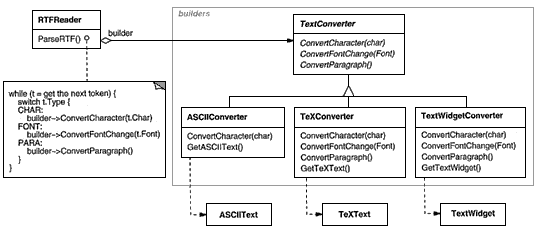
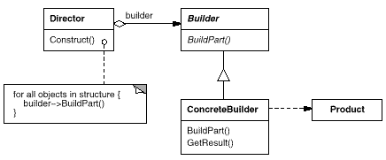
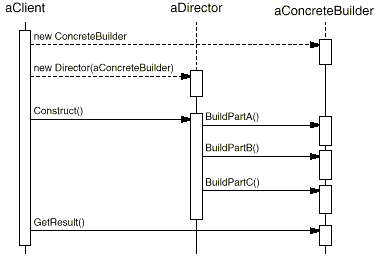

class MazeBuilder {
public:
virtual void BuildMaze() { }
virtual void BuildRoom(int room) { }
virtual void BuildDoor(int roomFrom, int roomTo) { }
virtual Maze* GetMaze() { return 0; }
protected:
MazeBuilder();
};
Maze* MazeGame::CreateMaze (MazeBuilder& builder) {
builder.BuildMaze();
builder.BuildRoom(1);
builder.BuildRoom(2);
builder.BuildDoor(1, 2);
return builder.GetMaze();
}
Maze* MazeGame::CreateComplexMaze (MazeBuilder& builder) {
builder.BuildRoom(1);
// ...
builder.BuildRoom(1001);
return builder.GetMaze();
}
class StandardMazeBuilder : public MazeBuilder {
public:
StandardMazeBuilder();
virtual void BuildMaze();
virtual void BuildRoom(int);
virtual void BuildDoor(int, int);
virtual Maze* GetMaze();
private:
Direction CommonWall(Room*, Room*);
Maze* _currentMaze;
};
StandardMazeBuilder::StandardMazeBuilder () {
_currentMaze = 0;
}
void StandardMazeBuilder::BuildMaze () {
_currentMaze = new Maze;
}
Maze* StandardMazeBuilder::GetMaze () {
return _currentMaze;
}
void StandardMazeBuilder::BuildRoom (int n) {
if (!_currentMaze->RoomNo(n)) {
Room* room = new Room(n);
_currentMaze->AddRoom(room);
room->SetSide(North, new Wall);
room->SetSide(South, new Wall);
room->SetSide(East, new Wall);
room->SetSide(West, new Wall);
}
}
void StandardMazeBuilder::BuildDoor (int n1, int n2) {
Room* r1 = _currentMaze->RoomNo(n1);
Room* r2 = _currentMaze->RoomNo(n2);
Door* d = new Door(r1, r2);
r1->SetSide(CommonWall(r1,r2), d);
r2->SetSide(CommonWall(r2,r1), d);
}
Maze* maze;
MazeGame game;
StandardMazeBuilder builder;
game.CreateMaze(builder);
maze = builder.GetMaze();
class CountingMazeBuilder : public MazeBuilder {
public:
CountingMazeBuilder();
virtual void BuildMaze();
virtual void BuildRoom(int);
virtual void BuildDoor(int, int);
virtual void AddWall(int, Direction);
void GetCounts(int&, int&) const;
private:
int _doors;
int _rooms;
};
CountingMazeBuilder::CountingMazeBuilder () {
_rooms = _doors = 0;
}
void CountingMazeBuilder::BuildRoom (int) {
_rooms++;
}
void CountingMazeBuilder::BuildDoor (int, int) {
_doors++;
}
void CountingMazeBuilder::GetCounts (
int& rooms, int& doors
) const {
rooms = _rooms;
doors = _doors;
}
int rooms, doors;
MazeGame game;
CountingMazeBuilder builder;
game.CreateMaze(builder);
builder.GetCounts(rooms, doors);
cout << "The maze has "
<< rooms << " rooms and "
<< doors << " doors" << endl;